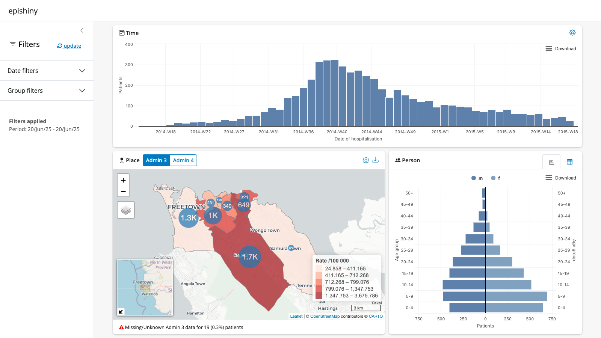

Please note this package is in alpha stage of development and not yet suitable for use in production as the API is likely to change.
Motivation
Interactive web-based data visualisations and dashboards are an increasingly common method of monitoring infectious disease outbreaks. Whilst R is now a commonly used tool for analysis and data visualisation in epidemiology, epidemiologists will often lack the knowledge required to be able to produce interactive dashboards directly from within their R workflows, resulting in external propriatory software being used instead.
epishiny aims to bridge this gap by providing simple functions that produce engaging, feature-rich interactive visualisations and dashboards from epidemiological data using R’s shiny web-framework.
Installation
You can install the development version of epishiny from GitHub with either the pak or remotes package:
# install.packages("pak")
pak::pkg_install("epicentre-msf/epishiny", dependencies = TRUE)
# install.packages("remotes")
remotes::install_github("epicentre-msf/epishiny", dependencies = TRUE)Demo Dashboard
Launch a demo dashboard with examples of every epishiny module with the launch_demo_dashboard() function. The code for this dashboard can be found in inst/examples/demo of the package repository.

Tutorials
See the articles below on the package website to get started using epishiny with your data.
- Getting started
- Use cases
Contributions
Contributions are welcome. See the contributing article on the package website for details on how to contribute to epishiny.